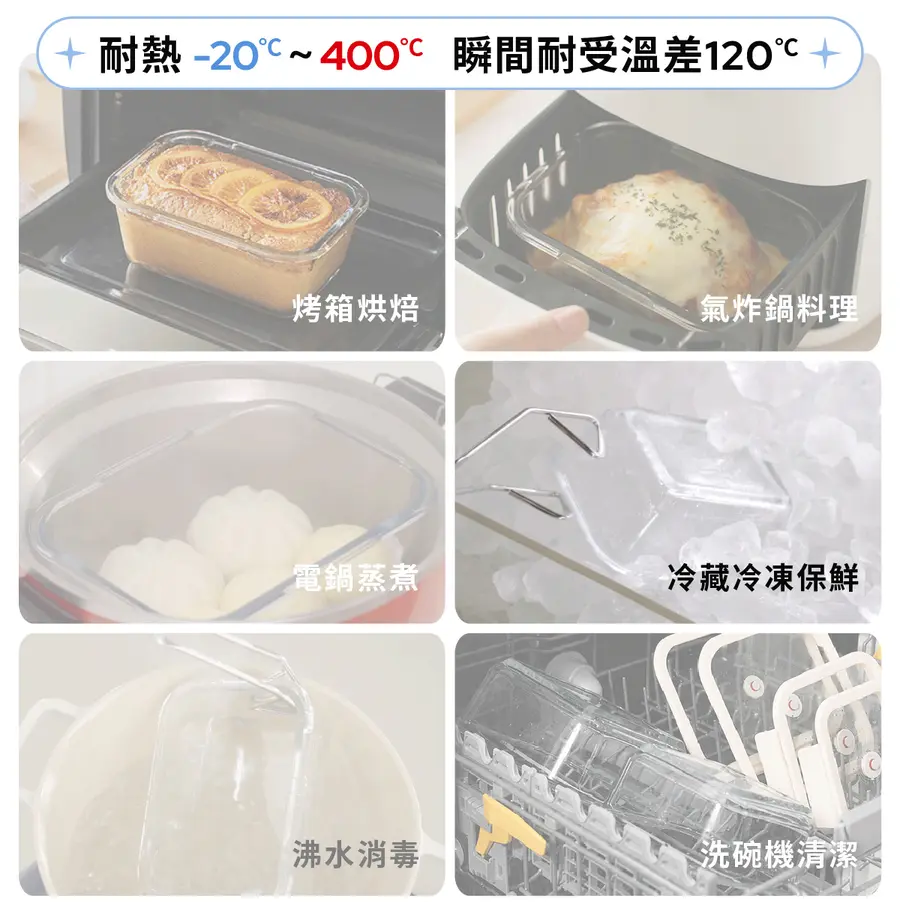
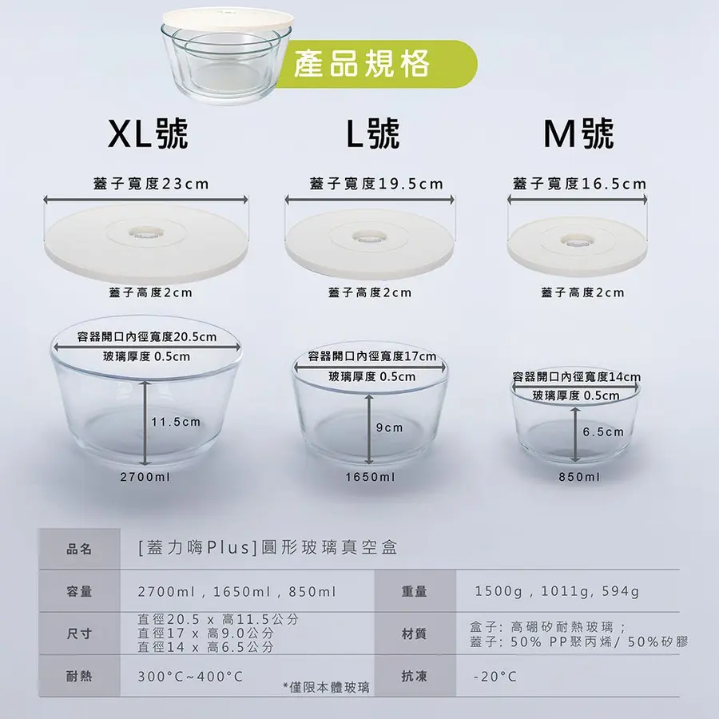
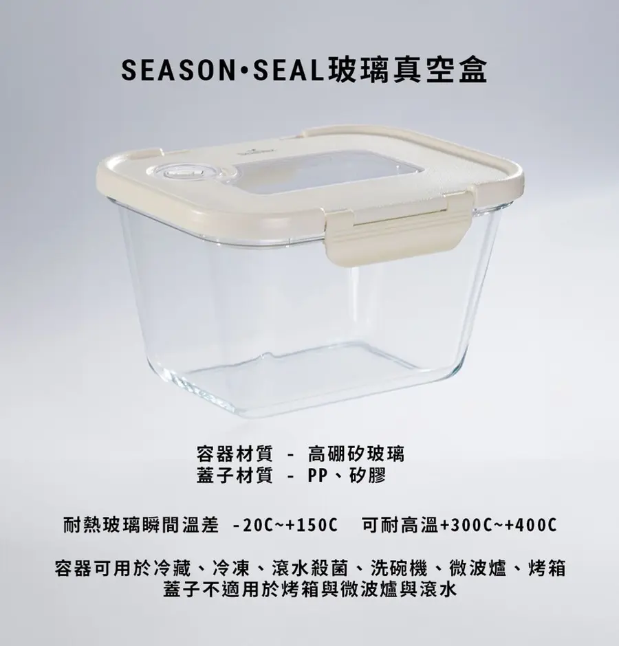

結論：玻璃款，太太條件
條件：玻璃盒身＋可微波＋可冷凍＋可冷藏，三項都要有來源頁原文。塑膠盒家人不接受，FRESA（PP）已排除。
- 第 1 類候選只有三組（盒身三項皆有原文）：
- D 嘖嘖 NEOFLAM 極鮮封Vacu 方案C：NT$2,490、7 盒 已確認 來源：嘖嘖專案頁；總容量 8,340ml 推測（計算：570×2＋950×2＋1500×2＋2300）
- A SealVax 蓋力嗨Plus：PChome 活動價 NT$1,969，活動到 11/03 已確認 來源：PChome 蓋力嗨Plus；總容量 5,200ml 推測（計算：850＋1650＋2700）
- B SealVax SeasonSeal：兩通路寫的單盒容量不同，哪個正確 未確認
- 暫定首選 D：價格 NT$2,490 已確認 來源：嘖嘖專案頁；每 ml 約 0.299 元最低 推測（計算：2490÷8340）；總容量約 8,340ml 最接近目標 推測（計算：570×2＋950×2＋1500×2＋2300）；但是集資預購、冷藏只有一張圖。
- 次選 A：現貨，活動價 NT$1,969 到 11/03 已確認 來源：PChome 蓋力嗨Plus，但上蓋不可微波 已確認
(*蓋子不適用烤箱與微波爐)
。目前沒有第三名。 - 上蓋：A、B 的上蓋不可微波，要取下上蓋才能微波 已確認 原文
(蓋子不適用於微波爐烤箱)
蓋子不適用於烤箱與微波爐與滾水
來源：PChome 蓋力嗨Plus、PChome SeasonSeal 1大2中。D 的上蓋有微波原文，但要先打開真空閥 已確認 FAQ可以，微波時蒸氣會自真空閥門自動散出，微波前須保持真空閥門暢通、無異物。
來源：嘖嘖 FAQ - D 的限制：是集資預購，募資到 2026/11/12 23:59 已確認；冷藏證據只有專案頁一張圖的
冷藏冷凍保鮮
，規格表只寫「冷凍」 已確認 來源：嘖嘖專案頁 - C NEOFLAM 極鮮封Z 必備5件組：附條件，台灣版（官網、momo、PChome）沒有「冷藏」二字 未確認；「冷藏冷凍」原文只見於香港經銷頁，不能代替台灣版。
舊版（含塑膠款）收在本頁最下方，預設收合，已不適用。
候選卡（點標題收合或展開）
暫定首選 D 嘖嘖 NEOFLAM 極鮮封Vacu 方案CNT$2,490，7 盒，集資預購
- 已確認 價格：
✦C 真空超值 8 件組 NT$ 2,490 26 折 預定售價 NT$ 9,240
來源：嘖嘖專案頁 - 已確認 盒數與容量：
真空機VACU 1 入；長方形保鮮盒 7 入 - 570ml x2 - 950ml x2 - 1500ml x2 - 2300ml x1
來源：嘖嘖專案頁 - 推測 總容量 8,340ml（計算：570×2＋950×2＋1500×2＋2300） 來源：嘖嘖專案頁
- 推測 每 ml 0.299 元（計算：2490÷8340） 來源：嘖嘖專案頁
- 已確認 材質：
材質 盒身｜硼矽耐熱玻璃 上蓋｜矽膠+強化玻璃+PP
（玻璃盒身） 來源：嘖嘖規格表圖 - 已確認 微波、冷凍：規格圖
適用 洗碗機、烤箱、微波爐、電鍋、氣炸鍋、冷凍、熱水消毒
來源：嘖嘖規格表圖 - 已確認 單一圖片原文。冷藏：專案頁圖（標題
耐熱 -20℃～400℃ 瞬間耐受溫差120℃
）六格之一冷藏冷凍保鮮
。只有這一張圖，規格表只寫「冷凍」，FAQ 與更新文字沒有冷藏字樣。 來源：嘖嘖專案頁 - 已確認 上蓋微波：FAQ「上蓋可以微波嗎？」答
可以，微波時蒸氣會自真空閥門自動散出，微波前須保持真空閥門暢通、無異物。微波時間建議一次不超過3分鐘。
來源：嘖嘖 FAQ - 已確認 氣閥：FAQ
真空閥是矽膠製作
來源：嘖嘖 FAQ - 未確認 上蓋與氣閥的冷藏、冷凍沒有分開寫。
- 已確認 保固：真空機
本品自購買日起提供一年保固
來源：嘖嘖專案頁 - 未確認 盒身保固：頁面沒寫。
- 已確認 出貨：頁面
預計 10/31 依訂單順序出貨
；提案人留言2026/10/28起 依照【下單順序】陸續安排出貨
；臺灣本島免運
來源：嘖嘖專案頁、嘖嘖留言 - 未確認 實際到貨日。
- 已確認 退款：
本商品享有7 天猶豫期
；嘖嘖常見問答：集資期間可按「取消贊助並退款」，如果該計畫已經集資結束，您則需要與提案人聯絡。
來源：嘖嘖專案頁、嘖嘖常見問答 - 已確認 OPENPOINT 6% 主題館：
2026/10/12 - 2026/10/25 購買主題館中精選專案，享 6% 點數回饋
，已結束，不計。 來源：嘖嘖 OPENPOINT 主題館 - 未確認 12 家銀行都沒查到嘖嘖專屬活動，實付以 NT$2,490 計。

來源：嘖嘖專案頁（圖存本地，已壓縮）

來源：嘖嘖規格表圖（圖存本地，已壓縮）
暫定次選 A SealVax 蓋力嗨Plus（含真空機）PChome NT$1,969 到 11/03，3 盒，上蓋不可微波
- 已確認 價格：PChome 網路價 NT$2,188；折扣價 NT$1,969，條件
餐廚鍋具限時9折 10/30 - 11/03 任選1件享9折
（只限 1 件） 來源：PChome 蓋力嗨Plus - 已確認 盒數與容量：3 盒，
圓形玻璃真空盒S (850ml)
M (1650ml)
L (2700ml)
來源：PChome 蓋力嗨Plus - 推測 總容量 5,200ml（計算：850＋1650＋2700） 來源：PChome 蓋力嗨Plus
- 推測 每 ml：活動期 0.379 元（計算：1969÷5200）；網路價 0.421 元（計算：2188÷5200） 來源：PChome 蓋力嗨Plus
- 已確認 材質：
盒子: 高硼矽耐熱玻璃 ; 蓋子: 50% PP聚丙烯/ 50%矽膠
（玻璃盒身） 來源：PChome 蓋力嗨Plus - 已確認 微波、冷藏、冷凍：
玻璃真空盒可-冷藏冷凍、滾水殺菌、洗碗機、微波爐烤箱 (蓋子不適用於微波爐烤箱)
；無毒耐用的玻璃容器可安全用於烤箱、微波爐、冷凍庫和洗碗機（不含蓋子）！
來源：PChome 蓋力嗨Plus - 已確認 上蓋：
(*蓋子不適用烤箱與微波爐)
，上蓋不可微波，要取下上蓋才能微波。 來源：PChome 蓋力嗨Plus - 未確認 氣閥單獨的微波、冷藏、冷凍：頁面沒有此字樣（氣閥在蓋上）。
- 已確認 抽氣器：含 Seal Mode 單模式真空機，配件
充電線-1入
來源：PChome 蓋力嗨Plus - 已確認 保固：真空機規格圖
保固 6個月
來源：PChome 蓋力嗨Plus - 未確認 盒身保固：頁面沒有此字樣。出貨日：頁面未列。
- 推測 刷卡後最低約 NT$1,890（計算：1969－79，4% 卡，1969×4%＝78.76 取 79），見下方信用卡區。 來源：PChome 蓋力嗨Plus

來源：PChome 蓋力嗨Plus（圖存本地，已壓縮）
候選，容量未確認 B SealVax SeasonSeal（含真空機）PChome、momo、官網；1大2中或1大1中
- 已確認 B1 1大2中（PChome）：網路價 NT$3,419；折扣價 NT$3,077，條件
餐廚鍋具限時9折 10/30 - 11/03
；內容玻璃真空盒-大 -1入 玻璃真空盒-中 -2入
來源：PChome SeasonSeal 1大2中 - 已確認 B2 1大1中（PChome）：網路價 NT$2,822；折扣價 NT$2,539（同 9 折活動） 來源：PChome SeasonSeal 1大1中
- 已確認 B2 1大1中（台灣官網）：
目前價格：NT$2,508
（含雙模式真空機） 來源：SealVax 台灣官網 1大1中 - 已確認 momo：1大1中 促銷價 NT$2,888；1大2中 促銷價 NT$3,419；兩頁
特惠商品，不適用折價券
180天保固期
訂單確認後，商品預計2026/11/02出貨
來源：momo SeasonSeal 1大1中、momo SeasonSeal 1大2中 - 已確認 容量寫法：PChome 圖
容量 2400ml , 1500ml
；官網23 × 17.5 × 13.5 cm / 2400ml
23 × 17.5 × 8 cm / 1500ml
；momo 規格圖容量 2000ml，1200ml
，尺寸相同。 來源：PChome SeasonSeal 1大2中、SealVax 台灣官網 1大1中、momo SeasonSeal 1大1中 - 未確認 同尺寸兩種容量，哪個正確未確認。
- 推測 總容量（依 PChome 與官網）：B1 5,400ml（計算：2400＋1500×2）；B2 3,900ml（計算：2400＋1500） 來源：PChome SeasonSeal 1大2中、SealVax 台灣官網 1大1中
- 推測 總容量（依 momo）：1大2中 4,400ml（計算：2000＋1200×2）；1大1中 3,200ml（計算：2000＋1200） 來源：momo SeasonSeal 1大1中
- 推測 每 ml：B1 PChome 活動期 0.570 元（計算：3077÷5400）；B2 官網 0.643 元（計算：2508÷3900）；B2 PChome 活動期 0.651 元（計算：2539÷3900） 來源：PChome SeasonSeal 1大2中、PChome SeasonSeal 1大1中、SealVax 台灣官網 1大1中
- 已確認 三項（PChome 圖）：
容器可用於冷藏、冷凍、滾水殺菌、洗碗機、微波爐、烤箱
；官網真空盒可-冷藏冷凍、滾水殺菌、洗碗機、微波爐烤箱 (蓋子不適用於微波爐烤箱)
來源：PChome SeasonSeal 1大2中、SealVax 台灣官網 1大1中 - 已確認 上蓋：
蓋子不適用於烤箱與微波爐與滾水
，上蓋不可微波，要取下上蓋才能微波。 來源：PChome SeasonSeal 1大2中 - 已確認 材質（官網）：
盒子: 高硼矽耐熱玻璃 ; 蓋子: 50% PP聚丙烯/ 50%矽膠
來源：SealVax 台灣官網 1大1中 - 未確認 PChome 機型寫「SEASON•SEAL真空機」，官網寫「雙模式真空機」，是否同機型未確認；PChome 與官網的保固、出貨未列。
- 推測 刷卡後約：B1 NT$2,954（計算：3077－123）；B2 PChome NT$2,437（計算：2539－102），4% 卡，見下方信用卡區。 來源：PChome SeasonSeal 1大2中、PChome SeasonSeal 1大1中

來源：PChome SeasonSeal 1大2中（圖存本地，已壓縮）
附條件，未確認 C NEOFLAM 極鮮封Z 必備5件組缺台灣版冷藏原文，不列入推薦
- 已確認 PChome 售價 NT$2,190，原價 NT$6,300；4 盒 460／800／1200／1900ml 來源：PChome 前代Z
- 推測 總容量 4,360ml（計算：460＋800＋1200＋1900）；每 ml 0.502 元（計算：2190÷4360） 來源：PChome 前代Z
- 已確認 材質：
玻璃本體：硼矽玻璃 上 蓋：強化玻璃+矽膠+PP聚丙烯
來源：NEOFLAM 官網 前代Z - 已確認 微波：
● 盒身適用於烤箱、微波爐、電鍋(需加蒸架)、氣炸鍋、烘碗機及洗碗機上層
；上蓋● 上蓋適用於微波爐與洗碗機，請勿放入烤箱、電鍋、氣炸鍋中使用
來源：NEOFLAM 官網 前代Z - 已確認 冷凍：
● 使用於冷凍時，含豐富水份之食品，建議盛裝2/3之容量
來源：NEOFLAM 官網 前代Z - 未確認 冷藏：台灣官網、momo、PChome 都沒有「冷藏」二字，只有「冰箱」圖示與比較表字樣。
- 已確認 香港經銷頁（非台灣官方）：
冷藏冷凍保鮮，適用洗碗機清洗
來源：香港經銷頁 - 已確認 補充5件組（不含真空機）售價 NT$1,990，標題「Sx2+Mx2+Lx1」 來源：PChome 極鮮封Z 補充5件組
- 推測 兩組合計 8,080ml（計算：4360＋3720），NT$4,180（計算：2190＋1990） 來源：PChome 前代Z、PChome 極鮮封Z 補充5件組
實付價與信用卡（點卡別展開）
主人實際持有哪張卡別 未確認；PChome 9 折品是否被銀行排除 未確認。以下都假設一次付清、直接刷卡（凱基除外），A 以 PChome 單件活動價 NT$1,969 計。
星展 PChome Prime 聯名卡
- 回饋原文
最高6% （2% 聯名點數 + 2% P幣 +2% 週四加碼P幣）
活動期間：2026/01/01～2026/12/31
已確認- 條件
- 週四加碼要週四下單；A 活動期 10/30 到 11/03 之間沒有週四，週四加碼不計。聯名點數與 P幣每期各上限 1,000。
- 套 A 的約實付
- 約 NT$1,891 推測（計算：1969×2%＝39.38 取 39，點數與 P幣各 39，1969－78）
來源：星展官方頁
聯邦 LINE Bank 聯名卡
- 回饋原文
指定網購/影音/遊戲/購票加碼3%
國內1%國外2.5%無上限
活動期間：115/8/1-116/7/31
已確認- 條件
- 指定網購含 PChome，加碼歸戶每月上限 300 元；嘖嘖不在指定通路。
- 套 A 的約實付
- 約 NT$1,890 推測（計算：1969×4%＝78.76 取 79，1969－79）
來源：聯邦官方頁
永豐 現金回饋 JCB 卡
- 回饋原文
特選通路最高5%回饋 活動期間：2026/7/1~2027/3/31
每卡戶每期帳單回饋上限300元
已確認- 條件
- 要完成任務A（電子或行動帳單）與任務B（永豐或京城帳戶自動扣繳）；網購名單含 PChome；分期不回饋。為什麼用 4%：官方頁另寫
特選通路加碼3%現金回饋為當期帳單消費，次期帳單回饋，每卡戶每期帳單回饋上限300元
與卡片國內1%、國外2%、特選通路加碼3%之現金回饋
，國內 1% 加特選通路加碼 3% 為 4% 推測（計算：1%＋3%）；官方頁寫最高 5%，其餘細項拆分未逐項確認，保守以 4% 估算。 - 套 A 的約實付
- 兩項任務都完成時約 NT$1,890 推測（計算：同 4%，1969－79）
來源：永豐官方頁
中信 ALL ME 卡
- 回饋原文
最高享該筆消費實際支付金額3%回饋
每戶上限NT300元/月
已確認- 條件
- 期間 115/01/01 到 115/12/31，分期不適用。折扣碼 CTBC1010SS 只見於第三方整理 未確認，且 A 未滿 2,000 不適用。
- 套 A 的約實付
- 約 NT$1,910 推測（計算：1969×3%＝59.07 取 59，1969－59）
台新 Richart 卡 數趣刷
- 回饋原文
- PChome 24h購物各通路適用，
不含支付連PChomePay、海外代購及PChome旅遊
已確認 - 條件
- 當天須切換為數趣刷；LEVEL2 3.3% 須以台新帳戶扣繳，否則 LEVEL1 1.3%；活動 2026/7/1 到 2027/12/31。
- 套 A 的約實付
- LEVEL2 約 NT$1,904 推測（計算：1969×3.3%＝64.98 取 65，1969－65）；LEVEL1 回饋約 26 元 推測（計算：1969×1.3%＝25.60）
來源：台新官方頁
凱基 魔BUY 卡
- 回饋原文
12大行動支付國內一般消費最高4%現金點回饋 (115/1/1~115/12/31)
需每月登錄活動且行動支付國內一般消費累積滿3,000元
已確認- 條件
- 要用行動支付，且當月行動支付滿 3,000 元（A 單筆未滿，須另有消費）；直接刷卡只有 0.7%。
- 套 A 的約實付
- 約 NT$1,890 推測（計算：同 4%，1969－79）；直接刷卡 14 點 推測（計算：1969×0.7%＝13.78）
來源：凱基官方頁
玉山 Unicard
- 回饋原文
- 官方頁內容摘要，非逐字 未確認：百大指定通路名單沒有 PChome 與嘖嘖；一般消費 1% 須帳單 e 化加玉山帳戶自動扣繳，否則 0.3%。
- 條件
- e 化加自動扣繳。
- 套 A 的約實付
- 約 NT$1,949 推測（計算：1969×1%＝19.69 取 20，1969－20）
來源：玉山官方頁
富邦 momo 卡（只適用 momo 通路）
- 回饋原文
■ momo通路最高3%
回饋期間：2026年10月~2027年1月結帳帳單
momo通路之分期付款交易不提供回饋。
已確認- 條件
- 第三方支付視為一般消費 1%；momo SealVax 兩頁寫
特惠商品，不適用折價券
，mo卡 3% 是否適用特惠商品 未確認。 - 套 A 的約實付
- A 在 PChome，不適用。若 3% 適用：momo SeasonSeal 1大1中 NT$2,888 約實付 NT$2,801 推測（計算：2888×3%＝86.64 取 87，2888－87）；1大2中 NT$3,419 約實付 NT$3,316 推測（計算：3419×3%＝102.57 取 103，3419－103）
來源：momo 富邦 momo 卡活動頁、momo SeasonSeal 1大1中、momo SeasonSeal 1大2中
嘖嘖：12 家銀行都沒查到嘖嘖活動 未確認，D 以 NT$2,490 計。王道（O! Range 是簽帳金融卡）、將來、土銀、富邦（momo 卡以外）：現行活動未查到 未確認。
未確認與不符合
未確認 三項至少一項沒有原文
- 未確認 Giaretti GL-VM3G（PChome 折扣價 NT$792）：只寫
適用於洗碗機/冰箱/微波爐/烤箱
，沒寫冷藏冷凍；上蓋不可微波；不含抽氣器。 來源：PChome Giaretti - 未確認 安妮兔 V6盒（PChome 折扣價 NT$704）：
可微波(需把氣閥打開透氣)
，冷藏冷凍沒寫，只有耐冷溫度。 來源：PChome 安妮兔 - 未確認 amuok 五件組（PChome 折扣價 NT$1,024）：只有
可微波
，冷藏冷凍沒寫；手動抽氣棒；ml 沒寫。 來源：PChome amuok 五件組 - 未確認 樂扣樂扣 頂級透明玻璃真空保鮮盒（momo NT$459、NT$549）：冷凍有
上蓋跟本體都可以冷凍。
，冷藏沒寫，微波只有圖示；上蓋材質三處寫法矛盾。 來源：momo 樂扣 630ml、momo 樂扣 1.02L、PChome 樂扣 630ml - 未確認 Coupang 樂扣（1組 NT$449、2組 NT$866）與 Fresh Maestro：頁面被擋，未繞過，原文讀不到。
- 未確認 Glasslock：ETMall 跨境 NT$1,556、NT$2,367，蘇打石灰鋼化玻璃，
玻璃保鲜盒取下盖子后可用于微波炉。
，冷藏冷凍沒有寫成可用於的句子；iOPEN 4件組 NT$660 三項沒寫。 來源：ETMall Glasslock 1、ETMall Glasslock 2、iOPEN Mall Glasslock - 未確認 淘寶各款（双立人、Glasslock、乐扣）：需登入，材質與三項未確認。 來源：淘寶 双立人內頁、淘寶 Glasslock 內頁、淘寶 乐扣乐扣內頁
- 推測 主人截圖淘寶樂扣組 ¥190 約 NT$934（計算：190×4.914＝933.66，不加運費）；材質與三項未確認。 來源：臺灣銀行牌告 來源：主人截圖（未附網址）
- 未確認 鍋寶 鎖氧系列（momo NT$940、NT$1,026）、ZWILLING FRESH & SAVE L號（momo NT$750）、Artisan、索樂生活：商品頁未讀，三項未確認。
- 未確認 極鮮封Z：台灣版沒有「冷藏」二字（見上方 C）。
不符合 不是玻璃盒身
- 已確認 SealVax 鮮立方（PChome 折扣價 NT$1,575）：
材質：蓋子-AS、PP、矽膠；容器-AS
，盒身是 AS 塑膠。 來源：PChome SealVax 鮮立方 - 已確認 FRESA 8件組：PP 塑膠，依家人要求排除（舊內容見最下方舊版區）。 來源：momo FRESA
- 推測 淘寶 304 不鏽鋼組：主人說明不可微波；1688 疑似同款頁寫 304 不鏽鋼，非玻璃（疑似同款，不是原頁；舊內容見最下方舊版區）。 來源：1688 疑似同款頁
匯率：臺灣銀行人民幣即期賣出 4.914，牌價掛牌時間 2026/10/31 09:25 已確認 來源：臺灣銀行牌告。Pyrex、iwaki 在 PChome 與飛比找不到真空玻璃組，不列入。
還要補什麼
- 極鮮封Vacu：冷藏只有圖內文字，上蓋冷藏冷凍沒分開寫，更新 #2 圖空白；可問嘖嘖提案人或 NEOFLAM 客服（嘖嘖 FAQ 有列）。
- 極鮮封Z：問 NEOFLAM 客服台灣版是否可冷藏。
- SealVax：PChome 版真空機與官網雙模式機是否相同；SeasonSeal 單盒是 2000／1200ml 還是 2400／1500ml，問 SealVax 客服。
- 富邦 momo 卡 3% 是否適用特惠商品：可問 momo 客服。
- Giaretti、安妮兔冷藏冷凍：問賣家問答。
- Coupang 兩次被擋未讀；鍋寶、ZWILLING、Artisan、索樂生活商品頁未讀；淘寶需登入。
以上若要問客服，由主人或家人自行詢問，我們不代為聯絡。
要主人決定的事
- 微波要取下上蓋可以嗎？可以：A、B 可列入。不行：只剩 D。
- 集資預購可以嗎（募資到 11/12，頁面寫預計 10/31 出貨，實際到貨 未確認）？可以：選 D。不行：選 A。
- D 的冷藏只有一張圖，算不算有原文？算：D 維持首選。不算：D 改列未確認。
- 手上有哪張卡？決定 A 的實付價（約 NT$1,890 到 1,949 推測，公式見信用卡區）。
舊版（含塑膠款，已不適用）
太太不接受塑膠，以上不再推薦。下列為前一版內容原樣保留供查，排名與判定都已不適用，目前結論以本頁最上方為準。
📊 原四組總表（NT$，點一列展開）
舊版依價格與資料完整度排列，不是玻璃款太太條件，已不適用。每 ml 價格下方是計算公式。舊版內容，已不適用。
組1 NEOFLAM 極鮮封 Vacu ✦C 8件組（盒7＋真空機1）｜舊版判定未確認，目前判定見最上方
- 通路
- 嘖嘖（募資）
- 價格
- NT$2,490
- 總容量
- 8,340ml
- 每 ml（含真空機）
- 0.30
計算：2490/8340 - 每 ml（只算盒子）
- 未確認（無不含機單賣價）
- 標記
- 已確認 價格、盒數、各盒容量； 推測 總容量加總與每 ml 為計算（公式見本列每 ml 欄）
- 來源
- 來源：嘖嘖專案頁
組3 NEOFLAM 前代極鮮封Z 必備5件組（盒4＋真空機1）｜舊版判定未確認，目前判定見最上方
- 通路
- momo、PChome
- 價格
- NT$2,190
- 總容量
- 4,360ml
- 每 ml（含真空機）
- 0.50
計算：2190/4360 - 每 ml（只算盒子）
- 未確認（無同盒不含機售價）
- 標記
- 已確認 價格； 推測 容量對應、總容量加總與每 ml 為計算（公式見本列每 ml 欄）
- 來源
- 來源：momo 前代Z、PChome 前代Z
組4 双立人 方形真空保鮮盒（含抽氣泵）｜舊版判定未確認，目前判定見最上方
- 通路
- 淘寶 双立人餐饮具旗舰店
- 價格
- 未確認
- 總容量
- 未確認
- 每 ml（含真空機）
- 未確認（容量未知無法計算）
- 每 ml（只算盒子）
- 未確認
- 標記
- 未確認 需登入
- 來源
- 來源：淘寶 双立人內頁
組2 淘寶 304 不鏽鋼 2800ml×3＋幫浦（1100／1600／2800／3500ml 款）｜不符合太太條件
- 通路
- 淘寶
- 價格
- ¥118.9 約 NT$584
計算：118.9×4.914；已含運，不另加運費 - 總容量
- 8,400ml
- 每 ml（含真空機）
- 0.070
計算：584/8400 - 每 ml（只算盒子）
- 0.060
計算：102.0×4.914/8400 - 標記
- 未確認 主人提供價格，已含運（依主人說明），不另加運費；價格無來源網址； 推測 台幣換算、總容量加總與每 ml 為計算（公式見本列價格與每 ml 欄）
- 來源
- 來源：主人截圖（未附網址） 來源：臺灣銀行牌告
同容量比較（目標約 8,340ml）
- 推測 組1：NT$2,490 已確認；8,340ml 為容量加總（計算：570×2＋950×2＋1500×2＋2300） 來源：嘖嘖專案頁
- 推測 組3：買兩組 8,720ml NT$4,380（計算：2190×2；容量 4360×2），多一台真空機 來源：momo 前代Z、PChome 前代Z
- 未確認 組4：容量未確認，無法比 來源：淘寶 双立人內頁
- 推測 組2：8,400ml 約 NT$584（計算：118.9×4.914；已含運，不另加運費），比組1 少約 NT$1,906（計算：2490－584），容量多 60ml（計算：8400－8340）；價格未確認 來源：臺灣銀行牌告 來源：主人截圖（未附網址）
材質與用途對照（玻璃電動款與淘寶款，點一項展開）
盒身材質
- 組1 Vacu
- 硼矽耐熱玻璃 已確認
- 組3 前代Z
- 硼矽耐熱玻璃 已確認
- 組4 双立人
- 未確認
- 組2 淘寶 304
- 未確認
上蓋材質
- 組1 Vacu
- 矽膠＋強化玻璃＋PP 已確認
- 組3 前代Z
- 強化玻璃＋矽膠＋PP 已確認
- 組4 双立人
- 未確認
- 組2 淘寶 304
- 未確認
安全證明
- 組1 Vacu
- SGS 未確認
- 組3 前代Z
- 不含BPA字樣、KTL保鮮測試；SGS 未確認
- 組4 双立人
- 未確認
- 組2 淘寶 304
- 未確認
耐溫
- 組1 Vacu
- 零下20℃至400℃，未寫部件 未確認
- 組3 前代Z
- 盒身零下20℃至400℃，上蓋至100℃ 已確認
- 組4 双立人
- 未確認
- 組2 淘寶 304
- 未確認
微波
- 組1 Vacu
- 上蓋可 600W 3分鐘內 已確認
- 組3 前代Z
- 盒身上蓋可 已確認
- 組4 双立人
- 未確認
- 組2 淘寶 304
- 主人說明不可；1688 疑似同款寫不可 已確認
冷凍
- 組1 Vacu
- 規格表「適用」列有冷凍 已確認
- 組3 前代Z
- 只有通用注意事項 未確認
- 組4 双立人
- 未確認
- 組2 淘寶 304
- 頁面未寫 未確認
冷藏
- 組1 Vacu
- 頁面未寫 未確認
- 組3 前代Z
- 頁面未寫（只有冰箱 icon） 未確認
- 組4 双立人
- 未確認
- 組2 淘寶 304
- 頁面未寫 未確認
烤箱
- 組1 Vacu
- 規格表列可 已確認；上蓋 未確認
- 組3 前代Z
- 只盒身 已確認
- 組4 双立人
- 未確認
- 組2 淘寶 304
- 未確認
洗碗機
- 組1 Vacu
- 可 已確認
- 組3 前代Z
- 盒身上層、上蓋可 已確認
- 組4 双立人
- 未確認
- 組2 淘寶 304
- 未確認
最大盒重量
- 組1 Vacu
- 2300ml 1318g 已確認
- 組3 前代Z
- 1900ml 1325g 已確認
- 組4 双立人
- 未確認
- 組2 淘寶 304
- 未確認
真空方式
- 組1 Vacu
- 電動 負30／負50kPa 已確認
- 組3 前代Z
- 電動 負25kPa 已確認
- 組4 双立人
- 未確認
- 組2 淘寶 304
- 未確認
真空保持
- 組1 Vacu
- 官方30天 未確認
- 組3 前代Z
- 官方兩周 未確認
- 組4 双立人
- 未確認
- 組2 淘寶 304
- 未確認
保固
- 組1 Vacu
- 一年 已確認
- 組3 前代Z
- 未確認
- 組4 双立人
- 未確認
- 組2 淘寶 304
- 未確認
到貨
- 組1 Vacu
- 募資，10/28起依序 已確認
- 組3 前代Z
- momo 預計11/02出貨 已確認
- 組4 双立人
- 未確認
- 組2 淘寶 304
- 未確認
對照表來源：組1 來源：嘖嘖規格表圖、嘖嘖特色圖示、嘖嘖 FAQ、嘖嘖真空機規格圖、嘖嘖更新；組3 來源：momo 前代Z；組4 來源：淘寶 双立人內頁；組2 來源：義烏購批發頁、1688 疑似同款頁（更早一版查到的批發頁寫塑膠；前一版依淘寶標題與 1688 疑似同款為 304 不鏽鋼；是否同款都未確認）。
🔍 原四組各組詳細
舊版排名依價格與資料完整度，已不適用；目前判定見本頁最上方。
舊版排名第 1 組1 嘖嘖 NEOFLAM 極鮮封 Vacu 8件組
- 未確認 舊版判定未確認，目前判定見最上方 微波、冷凍有原文；冷藏頁面未寫（專案頁、FAQ、留言、規格圖都沒有「冷藏」二字）。 來源：嘖嘖專案頁、嘖嘖規格表圖
- 已確認 募資，非現貨，專案頁風險說明寫可能因生產、包材、物流延後。 來源：嘖嘖專案頁
- 已確認 賣方：耐用富林股份有限公司。 來源：嘖嘖專案頁
- 已確認 ✦C 8件組 NT$2,490（預定售價 9,240）：真空機 VACU 1台、長方形盒 570ml×2、950ml×2、1500ml×2、2300ml×1。查詢時剩約 20 份。 來源：嘖嘖專案頁
- 價格 已確認；容量加總與每 ml 為計算 推測 合計 8,340ml（計算：570×2＋950×2＋1500×2＋2300）；每 ml 約 0.30（計算：2490/8340）。 來源：嘖嘖專案頁
- 已確認 盒子規格：重量 506／724／988／1318g（±5%）；盒身硼矽耐熱玻璃；上蓋矽膠＋強化玻璃＋PP；列為適用洗碗機、烤箱、微波爐、電鍋、氣炸鍋、冷凍、熱水消毒；中國製。 來源：嘖嘖規格表圖
- 推測 8件組總重約 5,912g（計算：506×2＋724×2＋988×2＋1318＋158）。 來源：嘖嘖規格表圖、嘖嘖真空機規格圖
- 未確認 耐溫零下20℃至400℃見於特色圖示，未寫是盒身或上蓋。 來源：嘖嘖特色圖示
- 已確認 提案人留言稱上蓋零下20℃至100℃（已確認為留言內容）。 來源：嘖嘖留言
- 已確認 微波：上蓋可，建議 600W，一次不超過 3 分鐘。 來源：嘖嘖 FAQ
- 未確認 上蓋能否進烤箱。
- 已確認 真空機：80×80×42mm、ABS＋矽膠、158g、3.7V、2.5W、1200mAh、模式1 負30kPa、模式2 負50kPa；充電約 3 小時，滿電最長 80 分鐘或約 320 次。 來源：嘖嘖真空機規格圖、嘖嘖 FAQ
- 未確認 抽真空所需時間。
- 未確認 SGS 或食品級檢驗證明（已看圖片中未出現，未逐張看完）。
- 未確認 真空保持實測：只有官方「30天保鮮」宣稱。
- 已確認 保固：自購買日一年，須官方通路購買。 來源：嘖嘖 FAQ
- 已確認 出貨：專案頁寫預計 10/31；更新 #2（2026/10/22）寫 10/22 起出貨；提案人留言稱颱風延後改 10/28 起依序出貨；查詢時仍有人問「出貨了嗎」。不送外島，本島免運。 來源：嘖嘖專案頁、嘖嘖更新、嘖嘖留言
- 未確認 現在下單何時到。
- 已確認 退款：募資期間可在贊助頁取消並原路退款（以虛擬帳戶付款的手續費不退）；結束後須聯絡提案人；7 天猶豫期，拆封或損傷收整新費。募資期 2026/09/30 21:00 至 2026/11/12 23:59。 來源：嘖嘖 FAQ、嘖嘖專案頁
- 已確認 付款：頁面寫信用卡 3 期零利率，未說明銀行。未計刷卡回饋。 來源：嘖嘖專案頁
- 推測 同容量參照（前代Z，非同款）：買兩組前代Z 8,720ml NT$4,380（計算：2190×2），組1 同容量約少 NT$1,890（計算：4380－2490）。 來源：momo 前代Z、PChome 前代Z、嘖嘖專案頁
來源：嘖嘖規格表圖（圖存本地，已壓縮）

來源：嘖嘖真空機規格圖（圖存本地，已壓縮）
舊版排名第 2 組3 NEOFLAM 前代極鮮封Z 必備5件組（玻璃電動款）
- 未確認 舊版判定未確認，目前判定見最上方 微波盒身上蓋都有原文；冷凍只有通用注意事項；冷藏頁面未寫（只有冰箱 icon）。 來源：momo 前代Z、PChome 前代Z
- 已確認 momo 頁面原文「促銷價 2,190 元」「市售價 6,300 元」「訂單確認後，商品預計2026/11/02出貨」「折價券： 特惠商品，不適用折價券」「刷mo卡享3%，回饋上限翻倍至2千」，配送「廠商宅配」；規格選項含「長S+長M+長L+長XL+真空機」。 來源：momo 前代Z
- 推測 mo卡 3% 若適用約回饋 NT$66（計算：2190×0.03）；適用條件與是否適用特惠商品未確認。 來源：momo 前代Z、富邦 momo 卡說明
- 已確認 PChome：NT$2,190（原價 6,300），68 則評價平均 4.9。 來源：PChome 前代Z
- 已確認 長方形 460ml（517g）、800ml（775g）、1200ml（1036g）、1900ml（1325g）；正方形 350／630／1000／1500ml（momo 詳情圖）。 來源：momo 前代Z
- 推測 選項 長S／M／L／XL 對應 460／800／1200／1900ml 是依圖序推定；必備5件組長方形 4 盒合計 4,360ml（計算：460＋800＋1200＋1900），盒重約 3,653g（計算：517＋775＋1036＋1325）。PChome 頁列的單盒重量略有不同（515／770／1055／1325g），以實品為準。 來源：momo 前代Z、PChome 前代Z
- 推測 每 ml 約 0.50（計算：2190/4360）。（容量對應為推測，見上一條） 來源：momo 前代Z、PChome 前代Z
- 已確認 材質：盒身硼矽耐熱玻璃；上蓋強化玻璃＋矽膠＋PP。耐溫：盒身零下20℃至400℃，上蓋零下20℃至100℃。 來源：momo 前代Z
- 已確認 用途：盒身可烤箱、微波爐、電鍋（需蒸架）、氣炸鍋、烘碗機、洗碗機上層；上蓋只可微波與洗碗機。 來源：momo 前代Z
- 已確認 真空機：Glace Z 專用電動真空機 76×74×43mm、110g、800mAh、USB-C、負25kPa、ABS＋矽膠，頁面寫可用「高達270次」。 來源：momo 前代Z
- 已確認 頁面寫「不含雙酚A、重金屬、BPA」；圖中有韓國 KTL 保鮮測試來源與一張韓文證書圖（內容讀不清）；未見 SGS 字樣。 來源：momo 前代Z
- 未確認 SGS；KTL 測試內容；保鮮「最長兩周」為官方宣稱。 來源：momo 前代Z
- 未確認 飛比價格走勢：公開頁沒有走勢圖；3 個月與 6 個月高低、是否曾低於 2,190。 來源：飛比搜尋（極鮮封Z）
- 未確認 NEOFLAM 官網現價（兩次查詢顯示幣別不一致，不採用）。
- 未確認 保固。
其他看過的選項（點開）
- 已確認 飛比搜尋頁當下價：friDay 必備5件組 2,190；Yahoo購物中心 5件組 2,490；momo Glace Z 必備5件組 2,390；蝦皮 麥浩斯、狐狸爸爸 必備5件組 2,390；PChome 補充5件組 1,990；momo 入門3件組 1,790。 來源：飛比搜尋（極鮮封Z）
- 已確認 LiFE RiCH Double Box 2入組＋自動幫浦 NT$3,060；SealVax 玻璃組（大1中2）＋幫浦 NT$3,419：盒數少、總價高（容量未確認）。 來源：飛比搜尋（玻璃真空盒）
- 未確認 蝦皮商城 NEOFLAM 官方商城 極鮮封Z 任選多件組 NT$1,990（價格來自飛比）：是否含真空機與任選規則未確認。 來源：飛比搜尋（極鮮封Z）
- 未確認 PChome 補充5件組 NT$1,990：是否含真空機未確認。 來源：飛比搜尋（極鮮封Z）
- 未確認 舊版寫 Costco 台灣查無含真空機的真空保鮮盒組；搜尋結果內容未確認。 來源：Costco 搜尋頁（真空保鮮盒）
- 已確認 已排除福利品、整新品、車用商品。

來源：momo 前代Z（圖存本地，已壓縮）

來源：momo 前代Z（圖存本地，已壓縮）
舊版排名第 3 組4 淘寶 双立人旗艦店
- 未確認 舊版判定未確認，目前判定見最上方 內頁需登入，微波、冷凍、冷藏商品說明都沒讀到。 來源：淘寶 双立人內頁
- 未確認 候選：双立人 方形食品級真空保鮮盒 含抽氣泵，店鋪「双立人餐饮具旗舰店」。內頁需登入才看得到，價格、規格、材質、泵、重量、運費、評價都未確認。 來源：淘寶 双立人內頁
- 已確認 公開列表頁可見：標題、列表價 ¥218，店鋪評分 物流 4.9、服務 4.9、描述 4.9（已確認為列表頁顯示）；實際各規格售價未確認。 來源：淘寶公開列表頁
- 推測 若以列表價 ¥218 估：商品約 NT$1,071（計算：218×4.914），加海運集運 2 至 4kg 約 NT$1,224 至 1,322（計算：(218＋31至51)×4.914）。價格未確認。此估算含集運運費，與組2 算法不同（組2 依主人說明不另加運費）。 來源：淘寶公開列表頁、臺灣銀行牌告、集運運費整理文
- 未確認 每 ml 與同容量：容量未確認，無法計算。
- 未確認 備選（內頁皆需登入）：Glasslock 旗艦店（列表價 ¥129）、乐扣乐扣專賣店（列表價 ¥125）。 來源：淘寶 Glasslock 內頁、淘寶 乐扣乐扣內頁
舊版排名第 4 組2 淘寶 主人那家款（304 不鏽鋼，不符合太太條件）
- 已確認 舊版判定不符合 主人說明不可微波；1688 疑似同款頁屬性寫「Material 304 stainless steel」「Microwave oven Not available」（同店同型號未證實）；淘寶公開頁標題卻寫「可微波」，互相矛盾，保守列不符合，待主人開原頁確認。 來源：1688 疑似同款頁、淘寶公開頁（304 款） 來源：主人截圖（未附網址）
- 未確認 主人提供價格，已含運（依主人說明），不另加運費；價格無來源網址，未確認。 來源：主人截圖（未附網址）
- 未確認 商品頁：淘寶內頁與搜尋頁都需登入，找不到價格相符的 item.taobao.com 內頁。
- 已確認 更早一版查到的同尺寸批發頁寫塑膠（已確認為該頁寫法，是否同款未確認）；前一版依淘寶標題與 1688 疑似同款為 304 不鏽鋼，以前一版為準，材質仍待原頁確認。 來源：義烏購批發頁、1688 疑似同款頁
- 未確認 單價：1100ml ¥27.2、1600ml ¥29.7、2800ml ¥34、3500ml ¥38.2、幫浦 ¥16.9。 來源：主人截圖（未附網址）
- 推測 最便宜組合：2800ml×3＝8,400ml，盒 ¥102.0（計算：34×3）＋幫浦 ¥16.9＝¥118.9，約 NT$584（計算：118.9×4.914），每 ml 約 0.070（計算：584/8400）。已含運，不另加運費。 來源：臺灣銀行牌告 來源：主人截圖（未附網址）
- 推測 2800×2＋1600＋1100＝8,300ml，盒 ¥124.9（計算：34×2＋29.7＋27.2），加幫浦 ¥141.8，約 NT$697（計算：141.8×4.914），每 ml 約 0.084（計算：697/8300）。 來源：臺灣銀行牌告 來源：主人截圖（未附網址）
- 推測 3500＋2800＋1100×2＝8,500ml，盒 ¥126.6（計算：38.2＋34＋27.2×2），加幫浦 ¥143.5，約 NT$705（計算：143.5×4.914），每 ml 約 0.083（計算：705/8500）。 來源：臺灣銀行牌告 來源：主人截圖（未附網址）
- 未確認 運費：主人說明此價格已含運，不另加運費（依主人說明）。
- 推測 每 ml 只算盒子：8,400ml 組 0.060（計算：102.0×4.914/8400）；8,300ml 組 0.074（計算：124.9×4.914/8300）；8,500ml 組 0.073（計算：126.6×4.914/8500）。 來源：臺灣銀行牌告 來源：主人截圖（未附網址）
- 已確認 關稅：完稅價格 NT$2,000 以下免稅，半年內限 6 次；2026/3/1 起須 EZ WAY 委任確認。 來源：關務署說明、財政部說明
- 推測 NT$584 至 705 在 2,000 免稅額內（計算：118.9×4.914 至 143.5×4.914）。 來源：臺灣銀行牌告、關務署說明 來源：主人截圖（未附網址）
- 未確認 材質、食品級證明、微波、烤箱、洗碗機、重量、真空實測：需登入才看得到。
🧴 FRESA 8件組（舊版，PP 塑膠，已排除）
PP 塑膠盒＋手動真空棒，和玻璃電動款材質與真空方式不同；不能進烤箱、電鍋。
- 已確認 舊版判定，PP 塑膠已排除 微波、上蓋可微波、冷凍冷藏規格表每個尺寸都打勾；使用須知「適用於微波爐及冰箱」「承受溫度最低-20℃」。冷凍冷藏為合併一欄。 來源：momo FRESA
- 已確認 momo「促銷價 1,962 元」（市售價 2,890），「3年保固期」，頁面寫預計 11/02 前到貨（2026/10/31 查詢）（頁面寫法，不保證；更早一版查詢時寫 10/31）。 來源：momo FRESA
- 已確認 內容：7 盒，各盒 500ml、750ml、1000ml 兩盒、1200ml 兩盒、1400ml，加手動真空棒 1 支；電動抽真空棒為另購（momo 推薦列 NT$882），本組不含。 來源：momo FRESA
- 推測 總容量 7,050ml 為加總（計算：500＋750＋1000×2＋1200×2＋1400）。 來源：momo FRESA
- 推測 每 ml 0.28（計算：1962/7050）。材質（PP 塑膠）與真空方式（手動）和玻璃電動款不同，比價時請一併考慮。 來源：momo FRESA
- 已確認 材質：PP 塑膠（非玻璃）；台灣製造，ISO9001／ISO14001。耐溫零下20℃至110℃；可微波（建議不超過 3 分鐘、加熱時拉開氣閥）、冷藏、冷凍、洗碗機；不可烤箱、電鍋、火爐、烤架（詳情圖為 FRESA 系列共用圖）。 來源：momo FRESA
- 未確認 圖寫通過歐盟 LFGB、不含 BPA、重金屬、塑化劑，有 SGS 圖示但沒有報告編號；SGS 是否有效未確認。 來源：momo FRESA
- 已確認 momo 評價 6 則全 5 星，無漏氣評論。 來源：momo FRESA
- 未確認 圖內 QA 寫「真空維持3~15天」（官方說法）。 來源：momo FRESA
- 推測 與前代Z 差異：塑膠輕、耐摔、不怕孩子摔破，但不能進烤箱；手動抽氣較費力；保固 3 年較長；價格少 NT$228（計算：2190－1962）而容量多 2,690ml（計算：7050－4360）。 來源：momo FRESA、momo 前代Z
- 推測 同容量按比例約 NT$2,321（計算：1962×8340/7050；實際只能整組買）。 來源：momo FRESA

來源：momo FRESA（圖存本地，已壓縮）

來源：momo FRESA（圖存本地，已壓縮）

來源：momo FRESA（圖存本地，已壓縮）

來源：momo FRESA（圖存本地，已壓縮）